參考資料:
http://trc2018.cn.nctu.edu.tw/
由 Cassette A 取出一片晶圓依序傳送至六個腔體 (Chamber A~F), 短暫停留指定時間, 最後傳回 Cassette B.
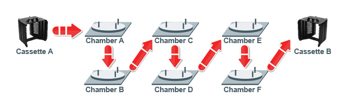
參賽者向平台詢問 Cassette A 的 slotmap, 根據 slotmap 向平台詢問晶圓編號, 依編號由 Cassette A 取出晶圓後傳送至 Cassette B 對應 Slot.
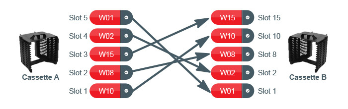
最佳排程
參賽者根據競賽平台指定之 6 片晶圓製程, 設計排程將每片晶圓取放至對應 Chamber, 依序完成每道製程內容, 競賽平台依完成全部製程之總時間給予評分.
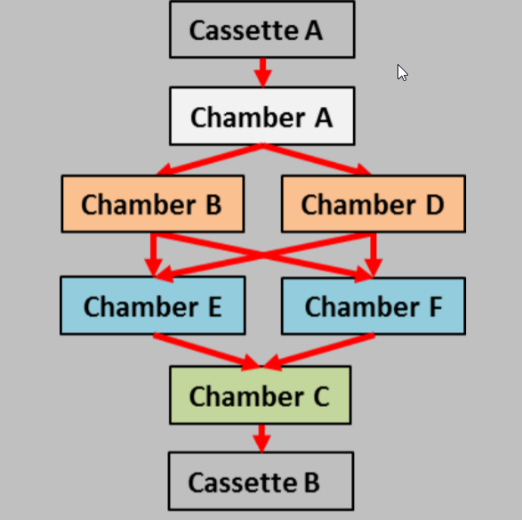
精準取放
參賽者將晶圓放入 Chamber A, 競賽平台以 CCD 相機偵測晶圓取放位置, 根據其精準度給予評分.
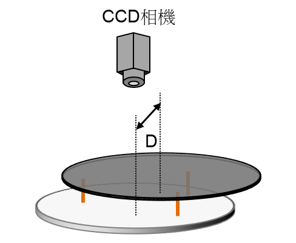
製程判斷
Chamber B, D, E, F為製程站點, 參賽者放置好晶圓後, 須下 Chamber Start 指令給競賽平台, 並蒐集競賽平台提供之製程資料, 根據資料曲線判斷製程是否完成或有異常發生, 競賽平台根據參賽者製程判斷之準確性給予評分.
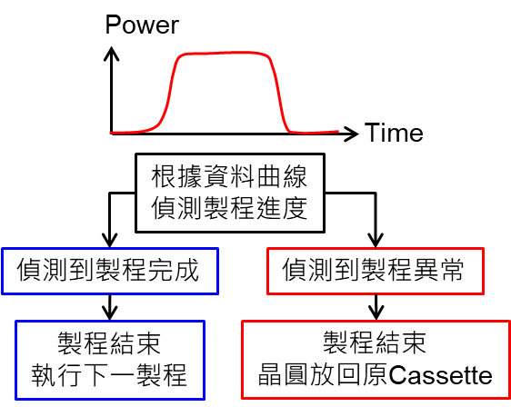
平穩傳送
參賽者將晶圓放入 Chamber C, 競賽平台以 Dot Laser 偵測晶圓傳送過程之角度平均 𝜃 ̅ 與標準差 𝜎 給予評分.
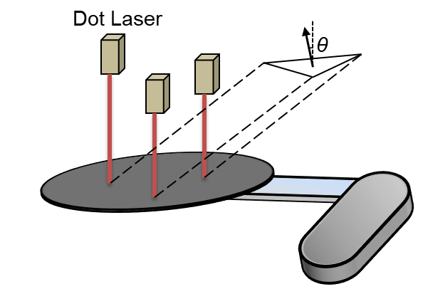
瑕疵檢測
Chamber C 為檢測站點, 參賽者放置好晶圓後, 須下 Chamber Start 指令給競賽平台, 並根據競賽平台提供之影像編號, 針對特定影像做瑕疵檢測, 競賽平台根據參賽者檢測結果之準確性給予評分.
得分 = 100*(正確數量 - 誤判數量) /實際數量
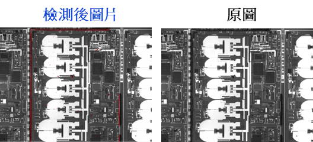
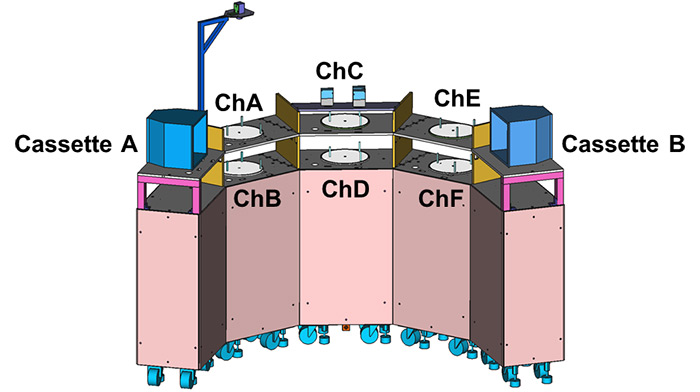
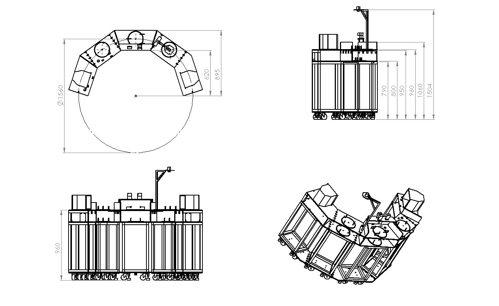
任務平台 STEP 格式壓縮檔 (rar)
任務平台尺寸 DWG 格式壓縮檔案 (7z)
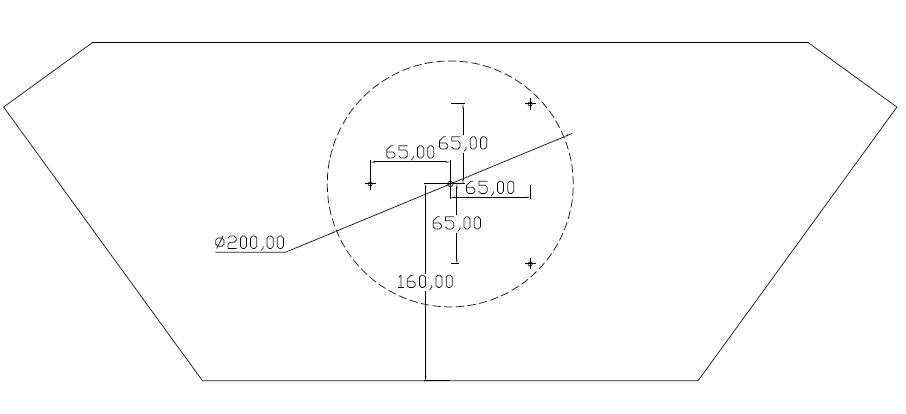
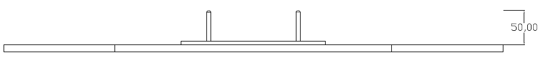
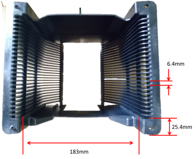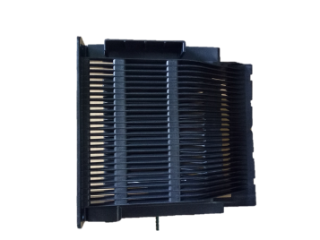
| Spec. | 8吋晶圓 |
| Diameter | 200+/-.2mm |
| Thickness | 700um~1000um |